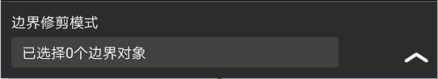

修改 → 修剪
修剪命令分快速修剪模式和边界修剪模式。启动“修剪”命令，进入快速修剪模式。
操作步骤：
步骤1：点击“修剪”按钮，进入快速修剪模式。
步骤2：选择对象即可修剪，支持点击选择和划线选择。
在快速修剪模式的设置中，点击“边界修剪模式”可切换到边界修剪模式。

修剪设置：
修剪模式：点击修剪模式立即切换状态。
延伸：根据平台的EDGEMODE系统变量控制TRIM和EXTEND命令如何确定剪切边和边界边。